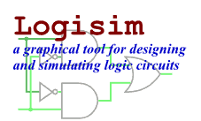

Charlie Moorcroft
Computer Systems fundamentals
Throughout the Computer System Fundamentals Unit or CSF you learn about discrete mathematics boolean algebra and assembly langauge programming. So far we have covered the algebra of sets and boolean algebra, I have very little expierenc in this area I would say it is my weak point. I am aiming to pass the upcoming CSF logic test to the best my ability, yet I do have doubts of how capable I am.
